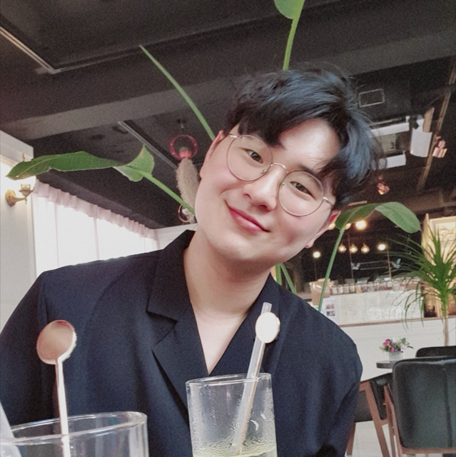

효율적인 VLA
VLA 모델이 실제 로봇 위에서 제대로 쓰이려면 세 가지가 필요하다고 봅니다. 다른 로봇에도 그대로 옮겨 쓸 수 있는 학습, 제어 주기마다 돌려도 부담 없는 가벼운 추론, 그리고 동작이 틀어지기 시작할 때 바로 알아채고 바로잡는 능력입니다.

아주대학교 인공지능학과 MMAI 연구실 박사과정지도교수: 유종빈 교수님
거대한 신경망을 엣지 기기에서도 돌아갈 만큼 가볍고 빠르게 만드는 연구를 합니다.
NeurIPS 2026 논문 채택
EMNLP 2026 논문 2편 채택
BMVC 2026 논문 채택
한국연구재단 박사과정생연구장려금 선정
IEEE Low-Power Computer Vision Challenge 1위 (CVPR 2025 워크숍)
ACCV 2024 논문 채택
CT 영상 기반 소장폐색 분류 기술 PCT 국제특허 출원
Scientific Reports에 논문 게재
International Journal of Surgery에 논문 게재
VLA 모델이 실제 로봇 위에서 제대로 쓰이려면 세 가지가 필요하다고 봅니다. 다른 로봇에도 그대로 옮겨 쓸 수 있는 학습, 제어 주기마다 돌려도 부담 없는 가벼운 추론, 그리고 동작이 틀어지기 시작할 때 바로 알아채고 바로잡는 능력입니다.
구조적 가지치기로 모델을 줄이면, 모델은 잘려 나간 부분을 다시 배워야 합니다. 이 회복 단계에 충분한 표현력을 주는 방법과, 깊은 층에 쌓이는 오차부터 먼저 잡도록 압축 순서를 설계하는 방법을 연구합니다(EMNLP 2026).
정확도는 지키면서 비전 모델을 더 가볍게 만드는 연구를 해 왔습니다. 브랜치 단위 재파라미터화(ACCV 2024), 일반화 성능을 잃지 않는 비전-언어 모델 미세조정(BMVC 2026), 예측값을 고치는 대신 후보 레이블을 검증하는 테스트 시점 적응(NeurIPS 2026)이 그 결과입니다. 2025 IEEE Low-Power Computer Vision Challenge Track 1 우승도 같은 고민에서 나왔습니다.
Jongbin Ryu, Dooyeon Na, Seungmin Oh, Donggeon Lee
국내 특허 출원 10-2026-0123632 (2026년 7월)
Hojung Shin, Jongbin Ryu, Seungmin Oh
PCT 국제특허 출원 PCT/KR2024/014604 (2024년 9월)
한국연구재단 · 2025.09 – 2027.08
Progressive Linear Activation for Depth-wise Reparameterization of Large-scale Models
한국지능정보사회진흥원(NIA) · 2022.10 – 2023.12
Track 1 · 45개 팀 참가 · CVPR 2025 워크숍
Layer Imitation: Efficient Vision-Language Model on the Mobile NPU
Google, 2023
Smiler: An Expression-Training App for Children with ASD
ACK, KOSIA, 2021
Recommender System for Web Search Based on NLP to Improve User Search Environment
한국디지털콘텐츠학회, 2021
Lightweight Video Search Using Video-to-Text Generation and Retrieval
정책이 예측하는 대상을 바꿔서, 한 로봇에서 익힌 기술을 다른 로봇에서도 쓸 수 있게 합니다.
작업 성공률은 그대로 두고, 제어 주기마다 드는 연산을 줄입니다.
동작이 어긋나기 시작하면, 정책이 바로잡을 수 있을 만큼 빨리 알아챕니다.
늘 같은 세기로 거는 대신, 데이터에 맞춰 스스로 조절되는 정규화를 연구합니다.
연구실 GPU 클러스터를 직접 구축하고 운영해 왔습니다. RTX 3090 8장짜리 노드 20대 남짓 규모로, 컨테이너 기반 환경 구성부터 노드별 CUDA 격리, 며칠씩 알아서 돌아가는 학습 파이프라인까지 맡았습니다. 연구 밖에서는 학부 연구생을 대상으로 AI 튜토리얼을 진행했고, 아주대학교 Google Developer Student Club을 함께 만들었습니다.